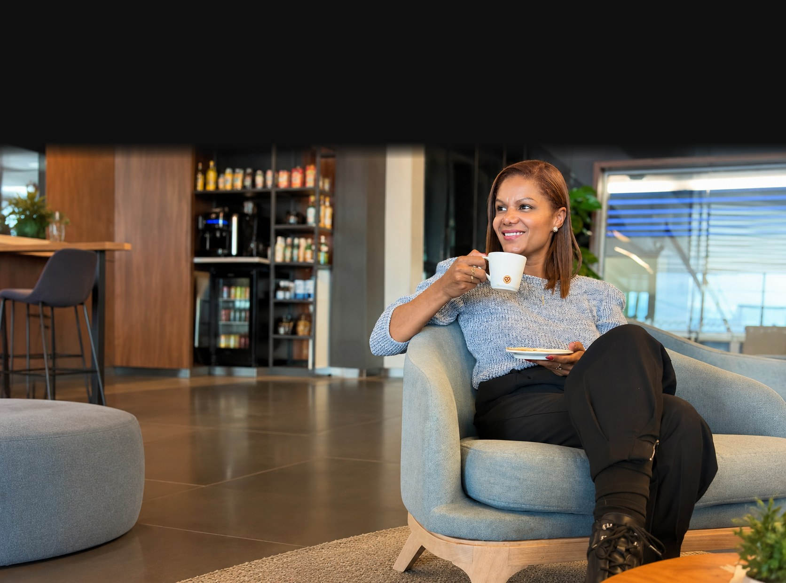
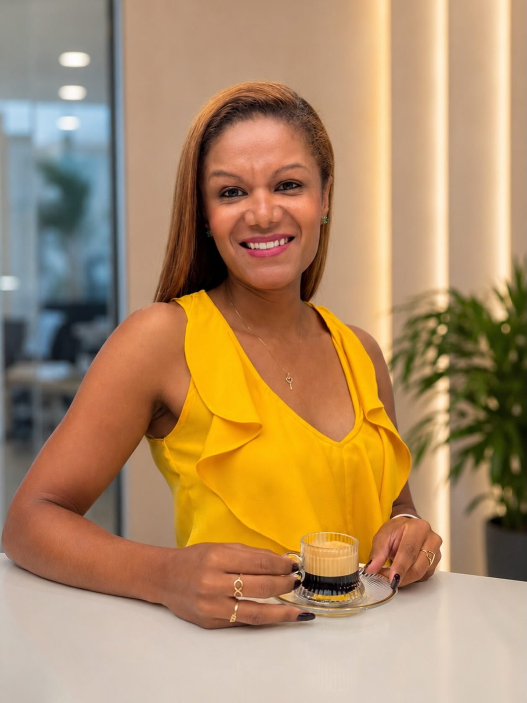
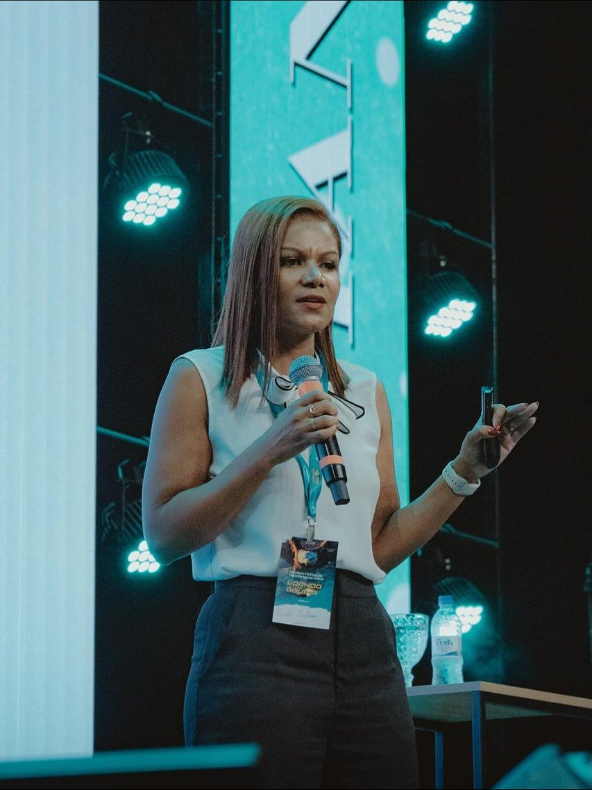
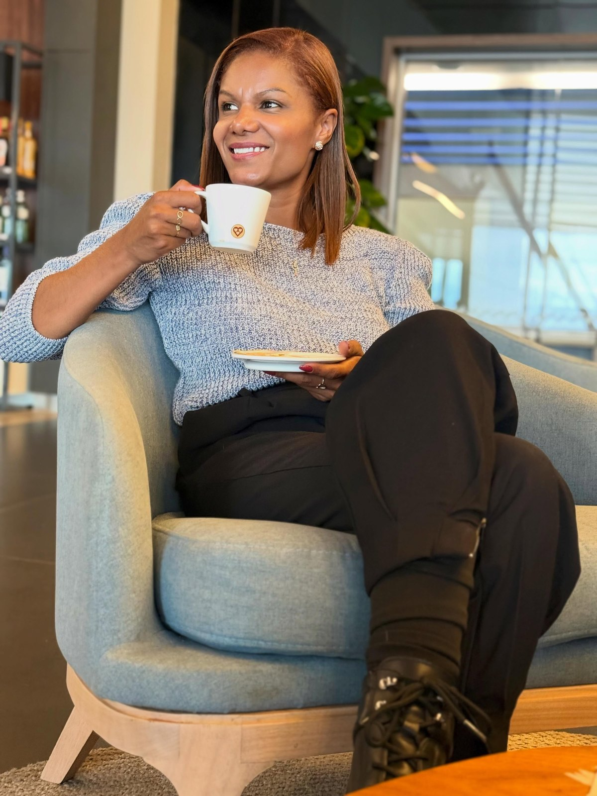

Direito bancário
Contratos de crédito cheios de cálculo escondido. Confiro se o que foi cobrado é o que foi pactuado.
- Juros e tarifas do contrato
- Empréstimos e financiamentos
- Cartão de crédito e cheque especial

Contabilidade, economia e direito juntos para revisar contratos, cobranças e cálculos, com laudos claros e sem juridiquês.



Reúno as três áreas para transformar contratos, extratos e processos em informação clara. Atendo pessoas e empresas, e também advogados que precisam de um laudo técnico para sustentar a tese.
“Eu faço como se fosse pra mim.”
Contratos de crédito cheios de cálculo escondido. Confiro se o que foi cobrado é o que foi pactuado.
Cobranças que você não reconhece e serviços que não foram entregues como prometido.
Disputas em que o valor devido precisa ser calculado e comprovado com método.
Cálculo e conferência de verbas para dar base técnica a pedidos e defesas.
Cada situação pede um tipo de trabalho. Eu explico qual faz sentido para o seu caso e o que esperar de cada um.
Faz o laudo técnico e neutro que ajuda o juiz a decidir, respondendo às perguntas (quesitos) do juízo e das partes.
Acompanha a perícia e emite um parecer fundamentado, que dá base técnica à tese de quem o contratou.
Análise prévia do contrato e dos cálculos para você saber se há diferença a recuperar e se vale a pena negociar ou processar.
Se não tiver tudo, comece mesmo assim. Eu digo o que falta.
Pelo WhatsApp, em poucas linhas e sem compromisso.
Contratos, extratos e peças do processo são examinados com rigor técnico.
Os cálculos viram uma planilha e um parecer ou laudo claro.
Fica claro o que é devido e quais são os próximos passos possíveis.
Envie os documentos pelo WhatsApp e acompanhe a análise pelo mesmo canal. O site também se ajusta a qualquer tela, do computador ao celular.
Chamar no WhatsApp ↗Não. A perícia extrajudicial é feita antes de qualquer ação, para avaliar se há diferença a recuperar e se compensa negociar ou processar.
O perito é nomeado pelo juiz e produz um laudo neutro. O assistente técnico é contratado por uma das partes e emite um parecer que apoia a tese dela.
Depende do tipo de trabalho, da quantidade de documentos e do prazo. Conte o seu caso pelo WhatsApp para saber o valor antes de começar.
O prazo depende do volume de documentos e, em processos, dos prazos do juízo. Ele é combinado com você antes de começar.
Sim, pelo mesmo canal da conversa. Envie só o que for necessário para a análise do caso.
Sim. Atendo pessoas, empresas e advogados que precisam de suporte técnico em contabilidade, economia e cálculos.
Os dados são usados apenas para analisar o seu caso. Veja os detalhes na política de privacidade.
Participação na 5ª edição do encontro, com o tema “Do legado ao cuidado”.
Previna-se, faça seus exames e cuide-se sempre. A sua saúde também importa.
O jeito de atender: cada caso analisado com o mesmo cuidado de um caso próprio.
Resposta pelo WhatsApp, (62) 99397-4884.